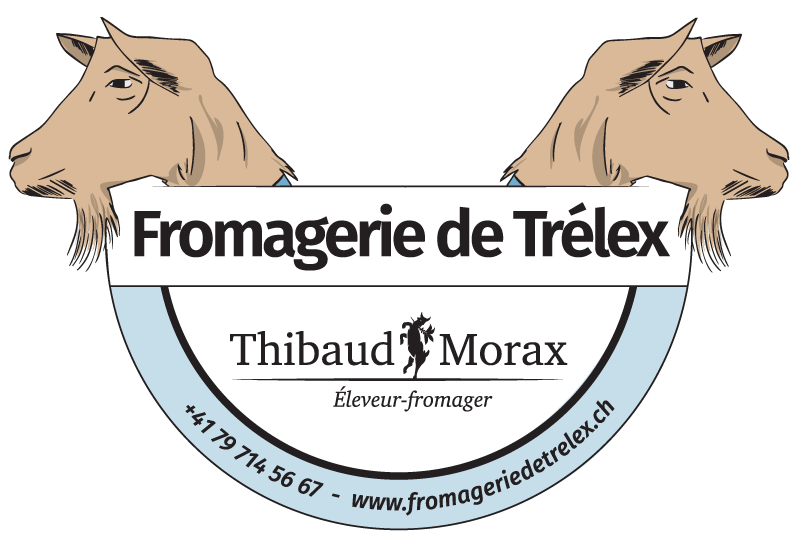
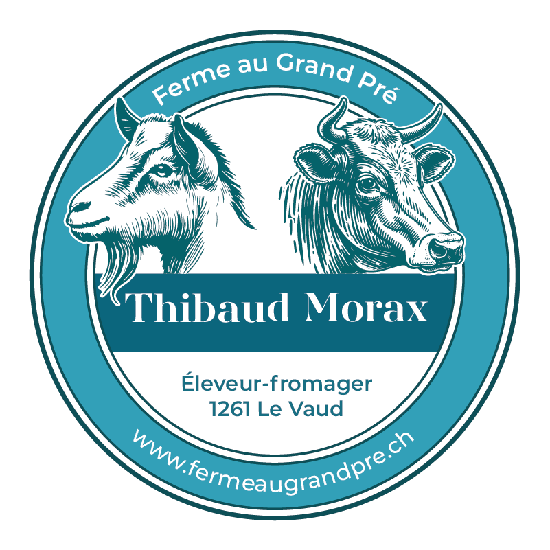
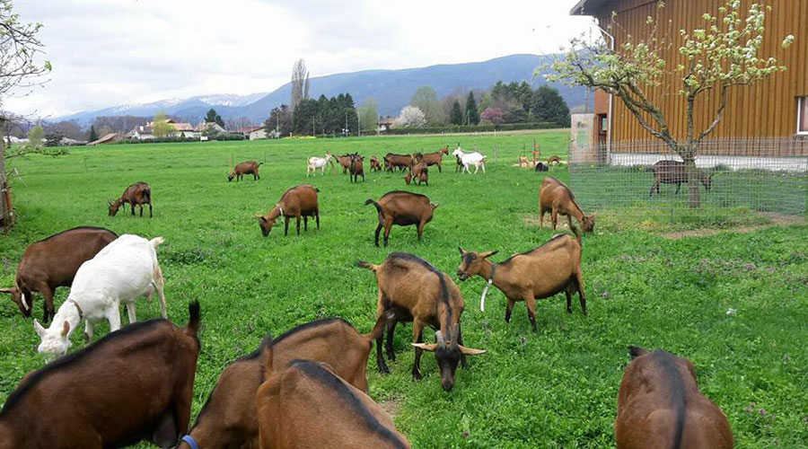
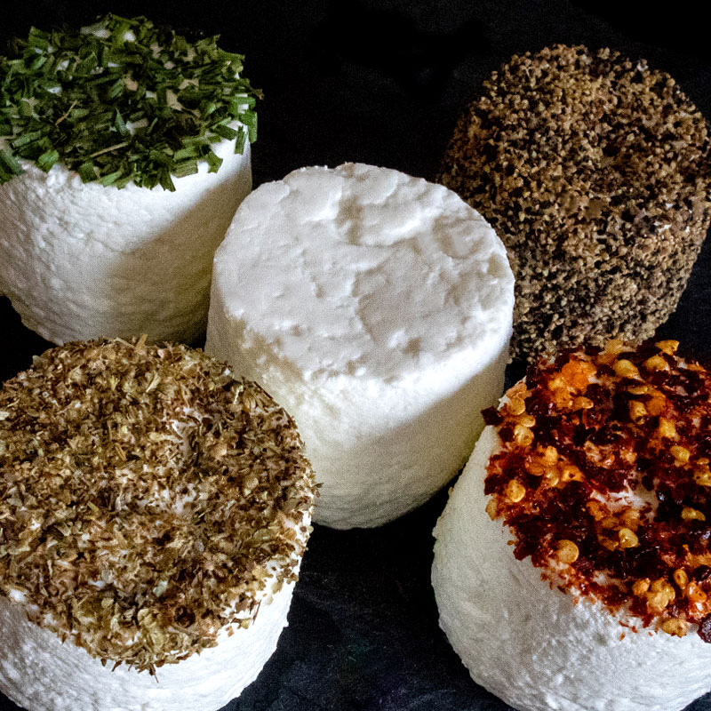
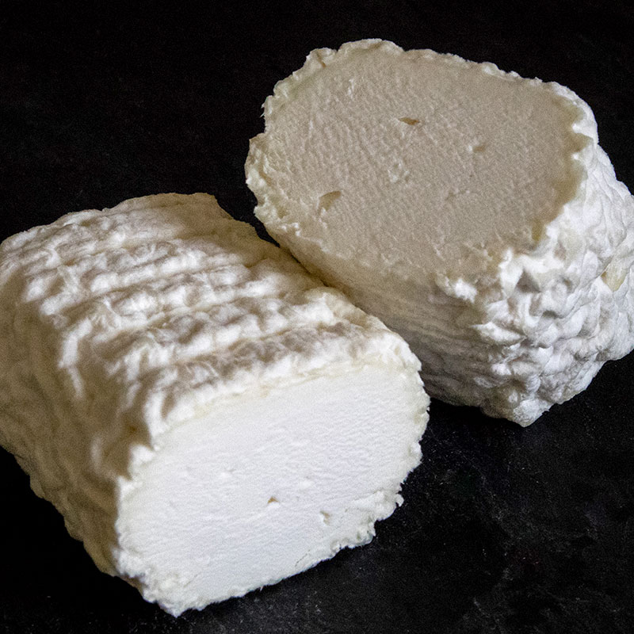
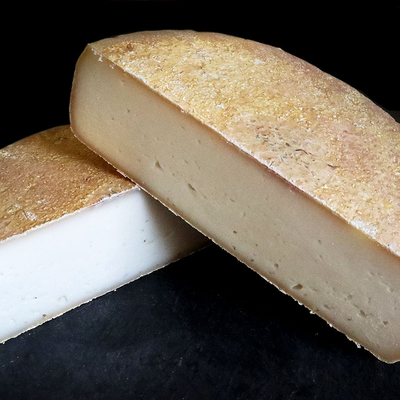
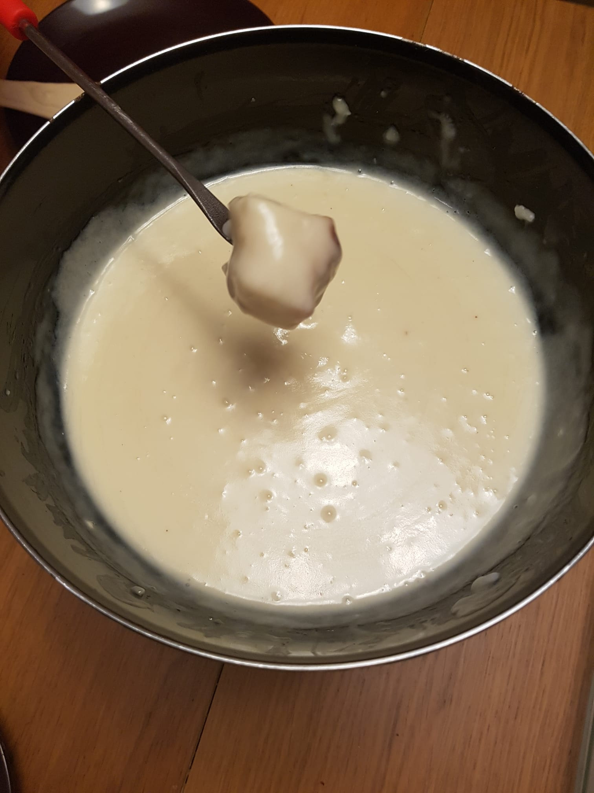
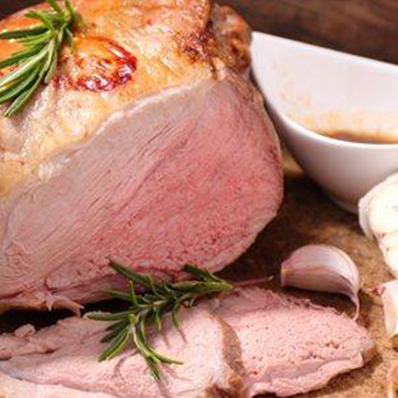
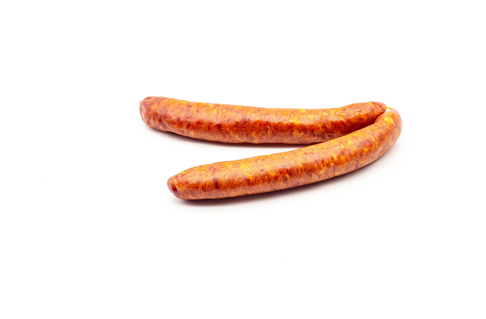

Mêmes produits artisanaux, nouvelle adresse

Fromagerie de Trélex
Route de Grens 3
1270
Trélex

Ferme au Grand Pré
Vy Neuve 2
1261 Le Vaud

Thibaud Morax — Agriculteur & Fromager à Le Vaud
Actif dans la région depuis 2014, Thibaud Morax est agriculteur et fromager passionné. Après plusieurs années d'activité sur la ferme familiale située à Trélex, une nouvelle étape débute le 1er janvier 2026 avec l'installation sur un domaine agricole à Le Vaud : la Ferme au Grand Pré.
La ferme accueille aujourd'hui environ 90 chèvres chamoisées et une vingtaine de bovins. Leur bien-être ainsi que la qualité de leur alimentation constituent la base d'un travail quotidien rigoureux.
L'intégralité du lait produit est transformée sur place, dans la fromagerie, en fromages et yogourts artisanaux. Chaque spécialité reflète un savoir-faire soigné, le respect des traditions fromagères et l'attachement à une production locale.
La Ferme au Grand Pré s'inscrit dans une agriculture à taille humaine, ancrée dans son territoire, où chaque fromage raconte l'histoire du domaine et de son troupeau.
Tous nos fromages sont fabriqués au lait entier et thermisé.

Nature, ciboulette, herbes de Provence, poivre, piment, mexicain, grec et indien.

Fromage tendre à pâte molle avec une croûte fleurie, idéal pour les salades de chèvre chaud ou à déguster froid.

Affiné 3 mois en cave, peut également se déguster en raclette ou fondue. Existe aussi avec épices : piment, champignon, herbes de Provence, poivre.

Une délicieuse fondue pour agrémenter vos soirées entre amis.
Tous nos yogourts sont fabriqués au lait entier et pasteurisés.
Un goût envoûtant, décliné en plusieurs arômes : vanille, nature, abricot, baie des bois, pêche Melba, fraise, caramel, mocca. (150g)
Un goût délicat, décliné en plusieurs arômes : vanille, nature, abricot, baie des bois, pêche Melba, fraise, framboise, caramel, mocca. (150g)
Découvrez une sélection de produits en fonction des saisons.

Viande rare et succulente. Vendue entier ou découpé selon votre souhait, ou en sachet mélangé. Possibilité d'acheter congelé.

Pour un barbecue original.
À l'apéro, pour offrir ou juste pour se faire plaisir — saucisses séchées.
Toutes nos viandes proviennent du domaine et sont transformées par des boucheries de la région.
Les produits sont vendus principalement dans les épiceries du district de Nyon.
Self-service à retrouver très bientôt !
Samedi 7h30 – 13h00 (toute l'année)
Également distribués dans les épiceries de la région (entre Coppet et Cottens VD), restaurants et traiteurs locaux.